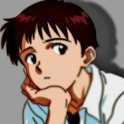

O canal Enygma é conhecido por produzir grandes sucessos sobre conteúdo relacionado a música,
especialmente rap e
hip-hop. O canal ganhou popularidade por suas musicas especiais de inscritos que atigiram
milhares de
visualizações, muitas vezes com letras relacionadas a jogos, animes, séries e cultura geek em
geral.